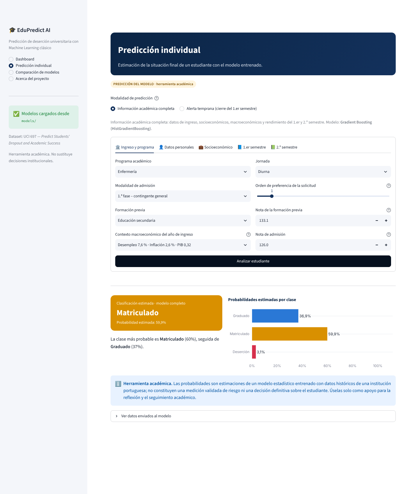

Problema
La deserción universitaria suele detectarse cuando ya es tarde para intervenir.
¿Cómo transformar datos educativos en conocimiento predictivo para anticipar la deserción de un estudiante y facilitar la identificación de posibles situaciones de riesgo académico?
Objetivo
Desarrollar una solución de Machine Learning clásico que permita analizar información académica, entrenar y comparar modelos de clasificación, evaluar su desempeño y presentar predicciones mediante una aplicación interactiva de Streamlit.
Pilar: Educación · Dataset UCI 697 — Predict Students' Dropout and Academic Success
4.424estudiantes
36variables predictoras
32,1 %Deserción
17,9 %Matriculado
49,9 %Graduado
Metodología
Datos UCI 697
→
Limpieza determinista
→
Split estratificado 80/20
→
Pipelines sin fuga
→
GridSearchCV 5-fold
(macro-F1)
→
Selección por CV
→
Evaluación en prueba
→
App Streamlit
Algoritmos: Regresión Logística · Random Forest · HistGradientBoosting. Desbalance tratado con
class_weight como hiperparámetro. Modelo adicional de alerta temprana sin variables del 2.º semestre.
Comparación de modelos (prueba, n = 885)
| Modelo | Macro-F1 CV | Accuracy | Macro-F1 | Bal. acc. |
|---|
| Regresión Logística | 0,717 | 0,724 | 0,684 | 0,695 |
| Random Forest | 0,724 | 0,769 | 0,717 | 0,716 |
| ★ Gradient Boosting (HistGradientBoosting) | 0,730 | 0,729 | 0,688 | 0,697 |
Selección por macro-F1 medio en validación cruzada de 5 pliegues; el conjunto de prueba no interviene en la selección.
| Clase (Gradient Boosting) | Precisión | Recall | F1 |
|---|
| Deserción | 0,808 | 0,697 | 0,749 |
| Matriculado | 0,415 | 0,597 | 0,490 |
| Graduado | 0,856 | 0,796 | 0,825 |
Matriz de confusión e importancia
| Real \ Pred. | Deserción | Matriculado | Graduado |
|---|
| Deserción | 198 | 59 | 27 |
|---|
| Matriculado | 32 | 95 | 32 |
|---|
| Graduado | 15 | 75 | 352 |
|---|
2.º sem.: unidades aprobadas0,183 1.er sem.: unidades aprobadas0,051 2.º sem.: unidades inscritas0,042 1.er sem.: unidades inscritas0,013
Importancia por permutación: caída de macro-F1 al permutar cada variable (asociación, no causalidad).
Alerta temprana (Gradient Boosting): macro-F1 CV 0,699 ·
macro-F1 prueba 0,669 · accuracy 0,711.
Aplicación Streamlit

Conclusiones
- Los tres algoritmos obtienen desempeños cercanos; Gradient Boosting fue seleccionado por validación cruzada.
- Las unidades aprobadas por semestre y la matrícula al día son las variables de las que más depende el modelo.
- Matriculado es la clase más difícil (F1 0,490).
- Con información del 1.er semestre ya es posible una alerta temprana útil, un semestre antes.
- Herramienta académica: identifica asociaciones, no causas, y no reemplaza decisiones institucionales.
Referencias
- Realinho, V., Vieira Martins, M., Machado, J., & Baptista, L. (2021). Predict Students' Dropout and Academic Success [Dataset]. UCI Machine Learning Repository. https://doi.org/10.24432/C5MC89
- Realinho, V., Machado, J., Baptista, L., & Martins, M. V. (2022). Predicting student dropout and academic success. Data, 7(11), 146. https://doi.org/10.3390/data7110146
- Martins, M. V., Tolledo, D., Machado, J., Baptista, L. M. T., & Realinho, V. (2021). Early prediction of student's performance in higher education: A case study. En Trends and Applications in Information Systems and Technologies (pp. 166–175). Springer. https://doi.org/10.1007/978-3-030-72657-7_16
- Pedregosa, F., Varoquaux, G., Gramfort, A., Michel, V., Thirion, B., Grisel, O., … Duchesnay, É. (2011). Scikit-learn: Machine learning in Python. Journal of Machine Learning Research, 12, 2825–2830.
Enlaces
[QR]
App
[URL pública pendiente]
[QR]
Video
[URL pública pendiente]
[QR]
Repositorio
https://github.com/DanielSQN/edupredict-ml-streamlit